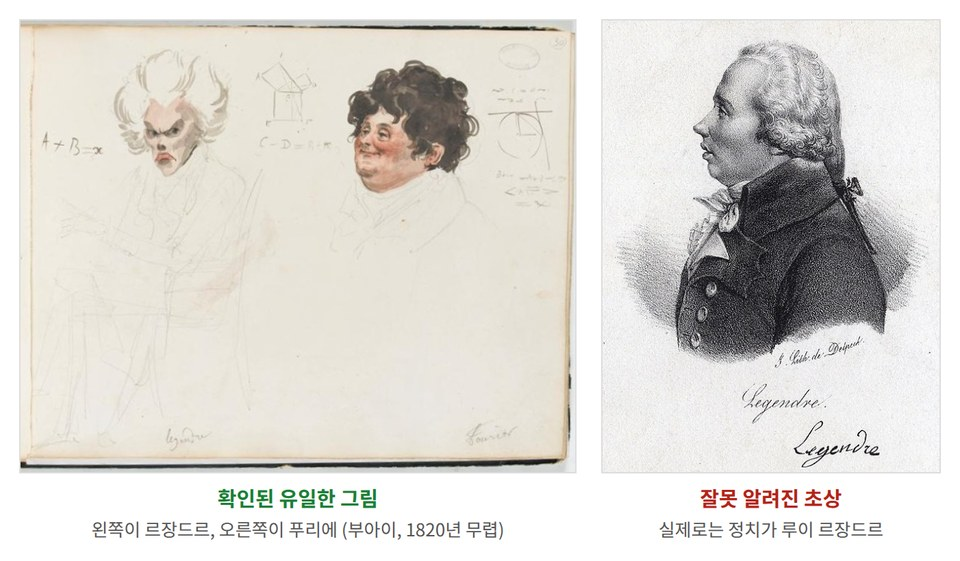
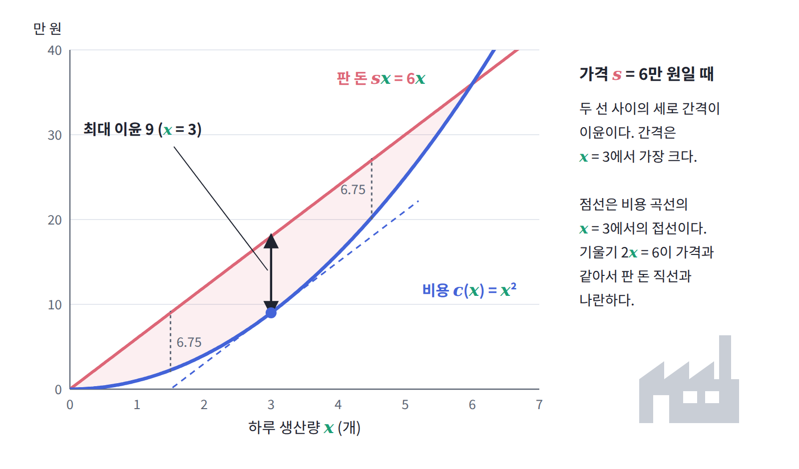
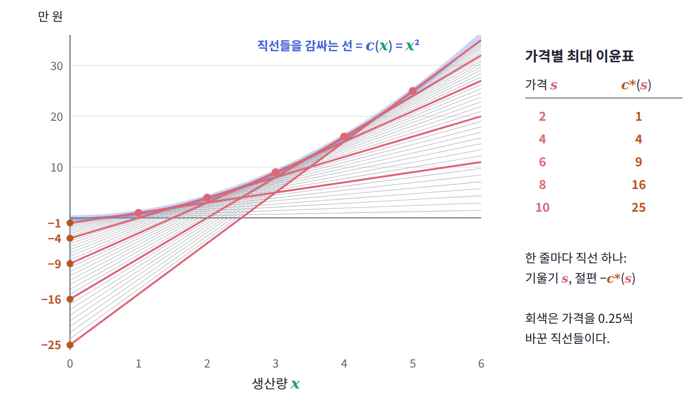

5장 — 르장드르 변환
이 장의 물음
ML에서 모델을 학습시킨다는 것은 대개 두 분포를 가깝게 만드는 일이다. 언어 모델을 최대우도로 학습하면 데이터 분포와 모델 분포 사이의 KL 발산을 줄이는 셈이고, 큰 모델의 출력을 작은 모델이 흉내 내도록 학습시키는 지식 증류에서는 같은 입력에 대한 두 모델의 출력 분포 사이의 KL을 줄인다. 강화학습으로 언어 모델을 미세조정할 때 정책이 원래 모델에서 너무 멀어지지 않도록 붙이는 벌점도 두 분포 사이의 KL이다. 이처럼 발산 (두 분포가 얼마나 다른지를 0 이상의 수 하나로 나타낸 것, divergence)은 학습의 목표 그 자체이거나 목표의 일부다.
위의 경우에는 발산을 식대로 계산할 수 있다. 모델이 확률을 직접 내놓기 때문이다. 그런데 확률은 모르고 샘플만 뽑을 수 있는 경우도 흔하다. GAN 같은 생성 모델은 그림을 뽑아 줄 뿐 그 그림이 나올 확률은 알려 주지 않고, 데이터 분포는 원래 샘플로만 주어진다. 표현 학습에서 「이 특징이 입력에 대한 정보를 얼마나 담았는가」를 재려 할 때도 손에 있는 것은 (입력, 특징) 쌍의 샘플뿐이다. 아래에 나오는 MINE(Belghazi 외, 2018)은 바로 이런 상황을 위해 나온 방법이다. 이름은 Mutual Information Neural Estimation, 곧 「신경망으로 상호정보량 재기」의 약자다. 상호정보량은 뒤에서 정의하지만, 지금은 두 변수를 함께 뽑은 분포와 따로 뽑은 분포 사이의 KL이라고만 알아 두면 된다. 처음 듣는 이름이어도 괜찮다. 필요한 것은 다음 단락의 주장 하나뿐이고, 그 주장이 왜 성립하는지가 이 장 전체의 이야기다.
두 분포 사이의 KL 발산을 알고 싶은데 손에 있는 것은 두 분포에서 뽑은 샘플뿐이라고 하자. KL은 두 밀도의 비에 로그를 씌운 뒤 평균한 값이므로, 밀도를 모르는 한 샘플만으로는 계산할 수 없을 것처럼 보인다. 그런데 MINE이라는 방법은 신경망 하나를 학습시키는 것만으로 이 값을 잰다. 신경망의 출력을 z라 할 때, 한쪽 샘플에서 구한 z의 평균에서 다른 쪽 샘플에서 구한 e^z의 평균에 로그를 씌운 값을 빼고, 이 차이가 커지도록 신경망을 학습하면 그 최댓값이 정확히 KL이 된다는 것이다. 밀도를 한 번도 적지 않았는데 어떻게 밀도 비의 평균이 나오는 걸까?
비슷한 모양의 식은 역학에도 있다. 라그랑지안 L(q, q̇)이 시간에 직접 의존하지 않으면 E = q̇·∂L/∂q̇ − L이라는 양이 보존되고, 이 양이 우리가 아는 에너지 K + U다. 그런데 왜 하필 「변수 곱하기 기울기, 빼기 원래 함수」라는 모양일까? 전혀 다른 곳에서 나온 두 식이 이렇게 닮은 것은 우연일까?
이 장은 다음 물음들에 차례로 답해 간다.
- 가격별 최대 이윤만 적힌 표를 받은 사람이 그 표만으로 공장의 비용 곡선을 되찾을 수 있을까?
- 골짜기가 둘인 곡선에 같은 조작을 하면 무엇이 되돌아오지 않을까?
- 에너지는 왜 「속도 곱하기 기울기, 빼기 라그랑지안」이라는 모양일까?
- 교차 엔트로피 손실을 로짓으로 미분하면 왜 「softmax 출력 − 정답」이 나오고, sigmoid와 logit은 왜 서로 역함수일까?
- 밀도를 한 번도 적지 않고 샘플의 평균만으로 어떻게 두 분포의 KL을 잴 수 있을까?
접선으로 적기: 이윤표에서 비용 곡선 되찾기
한 공장이 하루에 물건 x개를 만드는 데 c(x) = x²만 원이 든다고 하자. 많이 만들수록 야근 수당이 붙고 설비가 붐비어서, 한 개를 더 만드는 데 드는 비용이 점점 커지는 공장이다. 시장에서 이 물건이 한 개에 s만 원에 팔린다면, 공장은 하루에 몇 개를 만들어야 이윤이 가장 클까? (경제학에서는 가격을 흔히 p로 쓰지만, 이 책에서 p는 확률의 글자이므로 가격은 기울기(slope)의 앞글자를 따 s로 쓴다.)
역사: 르장드르와 뒤바뀐 얼굴
곡선을 점 대신 접선으로 적는다는 생각은 1787년 르장드르가 최소 곡면 문제를 푸는 논문에서 도입했다. 곡면을 점들 대신 접평면들로 적는 변환이었다. 이 변환은 그 뒤 200년 넘게 역학, 열역학, 최적화로 분야를 옮겨 가며 다시 발견된다.
르장드르의 이름에는 얼굴에 관한 이야기가 하나 따라다닌다. 1830년대부터 수학사 책에, 나중에는 웹사이트에까지 「아드리엥마리 르장드르」라는 이름으로 옆얼굴 초상화가 실려 왔는데, 2005년 스트라스부르 대학의 학생 두 명이 이 그림이 프랑스 혁명기의 정치가 루이 르장드르의 초상이라는 것을 밝혀냈다. 1833년에 나온 석판화 모음집에서 성이 같은 두 사람이 뒤섞인 뒤, 본인 대신 남의 얼굴이 170년 넘게 쓰인 것이다. 진짜 얼굴은 2008년에야 파리의 프랑스 학술원에서 찾았는데, 화가 줄리앵레오폴 부아이가 1820년 무렵 학술원 회원 73명을 그린 수채 캐리커처 가운데 푸리에와 나란히 있는 한 장이었다. 지금까지 확인된 르장드르의 그림은 이것뿐이다.

얼굴이 바뀌어도 사람은 그대로이듯, 곡선을 점으로 적든 접선으로 적든 담긴 정보는 그대로다. 이 장에서 확인할 것이 바로 그 사실이다.
가격별 최대 이윤표
이윤은 판 돈 sx에서 비용 c(x)를 뺀 값이다. 가격 s가 주어졌을 때 얻을 수 있는 최대 이윤을 c*(s)라고 쓰자.
c(x) = x²이면 이윤 sx − x²을 x로 미분해 0으로 두면 되므로, 가장 좋은 생산량은 x* = s/2이고 그때의 이윤은 s²/4다. 가격을 바꿔 가며 표로 정리하면 다음과 같다.
| 가격 s (만 원) | 가장 좋은 생산량 x* (개) | 최대 이윤 c*(s) (만 원) |
|---|---|---|
| 2 | 1 | 1 |
| 4 | 2 | 4 |
| 6 | 3 | 9 |
| 8 | 4 | 16 |
| 10 | 5 | 25 |
이 표에서 두 가지를 읽어 낼 수 있다. 첫째, 가장 좋은 생산량에서는 한 개를 더 만드는 비용 c′(x*) = 2x*가 가격 s와 같다. 한 개를 더 만들어 팔았을 때 버는 돈이 드는 돈보다 크면 더 만들고 작으면 덜 만들 테니, 두 값이 같아지는 곳에서 멈추는 것이 당연하다. 둘째, 최대 이윤 c*(s) = s²/4를 가격으로 미분하면 s/2, 곧 그 가격에서의 생산량 x*가 나온다. 가격이 조금 오르면 이미 만들던 x*개를 각각 조금씩 더 비싸게 파는 셈이므로, 이윤은 대략 생산량만큼의 빠르기로 늘어난다는 뜻이다.

이 두 사실을 나란히 놓으면 묘한 대칭이 보인다. 비용 곡선을 미분하면 생산량에서 가격이 나오고, 이윤 곡선을 미분하면 가격에서 생산량이 나온다.
비용 곡선에서 이윤표를 만들 수 있다면, 반대 방향으로도 갈 수 있을까? 공장 내부 사정은 전혀 모르고 「가격별 최대 이윤표」만 건네받은 사람이, 그 표만으로 원래의 비용 곡선 c(x)를 되찾을 수 있을까?
접선의 절편은 최대 이윤이다
비용 곡선 c(x) = x²의 그래프를 그리고, x = 5인 점에서 접선을 그어 보자. 그 점에서 곡선의 높이는 25이고 기울기는 10이므로, 접선은 y = 10x − 25다. 그런데 이 접선의 y절편 −25는 가격이 10일 때의 최대 이윤 25에 마이너스를 붙인 값과 같다. 다른 점에서 해 보아도 마찬가지여서, 기울기가 s인 접선의 식은 항상 다음과 같다.
왜 그럴까? 기울기가 s이고 절편이 b인 직선 sx + b가 곡선보다 항상 아래에 있으려면, 모든 x에서 b ≤ c(x) − sx여야 한다. 이 조건은 b가 −max(sx − c(x)) = −c*(s) 이하라는 말과 같다. 그러므로 기울기 s로 곡선 아래에 그을 수 있는 직선 가운데 가장 높은 것은 절편이 −c*(s)인 직선이고, 이 직선은 곡선에 딱 한 점에서 닿는다. 곧 접선이다. 다시 말해 c*(s)는 「기울기 s인 자를 곡선 아래에서 밀어 올려 닿을 때 그 자가 어디에 멈추는가」를 적은 값이다.
직선들이 감싸는 선
이제 처음 질문에 답할 수 있다. 가격별 최대 이윤표를 가진 사람은 가격마다 기울기 s, 절편 −c*(s)인 직선을 하나씩 그릴 수 있다. 가격을 촘촘하게 바꾸며 직선을 수없이 그리면 그 직선들이 감싸는 모양, 곧 직선들 가운데 각 x에서 가장 높은 것을 이은 선이 나타나는데, 그것이 바로 원래의 비용 곡선이다. 식으로 쓰면 이렇다.
숫자로 확인해 보자. x = 3이면 3s − s²/4를 s에 대해 최대화해야 하고, 최대가 되는 것은 s = 6일 때로 그 값은 18 − 9 = 9이다. 실제로 c(3) = 3² = 9이다. 이윤표에서 비용 곡선을 되찾는 식이 비용 곡선에서 이윤표를 만드는 식과 똑같은 모양이라는 점에 주목하자. 같은 조작을 두 번 하면 제자리로 돌아오는 것이다.

지금까지 본 패턴을 모으면 세 가지다. 첫째, 볼록한 곡선은 「각 x에서의 높이」로도, 「각 기울기에서의 접선 절편」으로도 적을 수 있고 두 방식이 담은 정보는 같다. 둘째, 한 방식에서 다른 방식으로 가는 식과 돌아오는 식이 같은 모양이다. 셋째, 두 방식의 도함수는 서로 역함수다. c′(x) = 2x는 생산량을 가격으로, c*′(s) = s/2는 가격을 생산량으로 보내므로, 둘은 같은 대응을 양쪽에서 본 것이다. 변수를 위치에서 기울기로 바꿔도 잃는 것은 없다.
문제 1. 이윤표에서 비용 곡선 되찾기
선생님의 수업. 김민준(학부 3학년, ML 강의 몇 개 수강)과 이서연(수학과 3학년)이 문제를 풀고, 선생님이 틀린 곳을 짚는다.
어떤 공장의 가격별 최대 이윤이 c*(s) = s²/8(만 원)이다. 이 공장이 하루 4개를 만들 때 드는 비용은 얼마인가?

되찾는 식은 c(x) = max(sx − c*(s))이죠. 최댓값이니까 미분해서 0으로 두면 돼요. x로 미분하면 s가 나오니까 s = 0이고, 그러면 c(x) = 0 − 0 = 0. 어… 비용이 0이에요? 공짜로 만드는 공장이네요.

민준아, 최대화하는 변수가 x가 아니라 s야. max 아래에 s가 있잖아. s로 미분하면 x − s/4 = 0이니까 s = 4x고, c(x) = 4x² − 2x² = 2x². 네 개면 32만 원이야.

맞아요. 민준 학생, 어느 변수를 움직이는지가 르장드르 변환의 전부예요. x는 여기서 고정된 입력이고, 골라야 하는 건 가격이에요. 이제 반대로 검산해 볼까요? c(x) = 2x²에서 출발해서 최대 이윤표를 다시 만들어 봐요.

sx − 2x²을 이번엔 x로 미분해야죠. x = s/4, 이윤은 s²/4 − s²/8 = s²/8. 돌아왔네요. 갈 때는 x를, 올 때는 s를 움직이는 거고요.

식의 모양은 같고 움직이는 변수만 바뀐 거네요. 그런데 이 공장은 앞에서 본 x² 공장보다 비용이 두 배라서 같은 가격에서 이윤은 절반이에요.

조교가 채점표만 돌려줬을 때 문제를 거꾸로 맞히는 거랑 비슷하네요. 채점표가 충분히 자세하면 문제를 완전히 되찾을 수 있는 거고요.
다만 「충분히 자세하면」이라는 조건이 중요해요. 어떤 경우에 완전히 되찾지 못하는지는 문제 3에서 봐요.